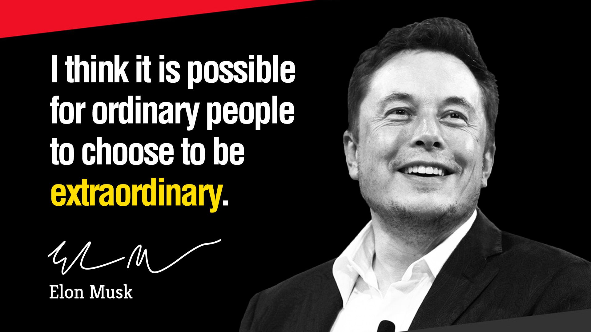
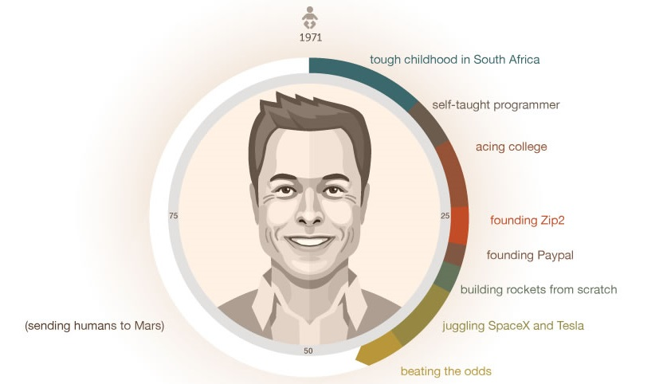

ELON MUSK
"It is possible for ordinary people to choose to be extraordinary."

Elon Musk is a man of many talents. Indeed, while some may know him as the face
behind Tesla, a leading automotive company, others recognise him from his
ambitious pursuits to colonise other planets.
Over the years, the ambitious entrepreneur has had lots of irons in the fire and has
led multiple noteworthy ventures. It seems that Musk is in a restless pursuit of
pioneering technology, ground-breaking innovations and sustainable developments.
Indeed, he has achieved a fleet of accomplishments on his way to the top.
The Life of ELON MUSK

Move the cursor slowly to view the content.
- Elon was born in South Africa to an engineer father and model mother on June 28, 1971.
- Elon read 10 hours a day as a kid, and even read the entire Encyclopedia Britannica.
- At age 12, Elon sold his first video game that he coded for $500.
- After being inspired by Hitchhiker's Guide to the Galaxy, Elon decided that his new life mission would be to save humanity.
- Leaves Stanford PhD program after two days to help found Zip2, which he started with a $28,000 loan from his father.
- He later received proceeds of $22 million from the sale of Zip2 to Compaq, which he used to start X.com.
- X.com merges with another online bank (Confinity) to form Paypal.
- Elon gets ousted as CEO from Paypal while on his honeymoon, yet still invests more money in the company regardless.
- He discovers that space rockets are artificially overpriced, and starts SpaceX to build his own rockets.
- Elon gets $250 million from the sale of Paypal to Ebay.
- Meets Tesla founders Marc Tarpenning and Martin Eberhard, and introduces them to JB Straubel. Elon invests in Tesla.
- After having three SpaceX rockets explode while approaching bankruptcy with Tesla, Elon takes action. He takes over as CEO of Tesla and raises an emergency fifth round of financing. Meanwhile, his fourth rocket launch with SpaceX succeeds and a $1.6B contract with NASA is signed.
- Tesla goes public at $17 per share (it trades for ~$250/share today)
- Elon announces reusable rockets that could make space flight 100x cheaper, and promises to also send humans to Mars by 2021-2031.
- Elon publishes the Hyperloop design, starts building the Gigafactory, unveils the Powerwall, and eventually lands a rocket on an ocean platform.

"If something is important enough, you do it even if the odds are not in your favor."